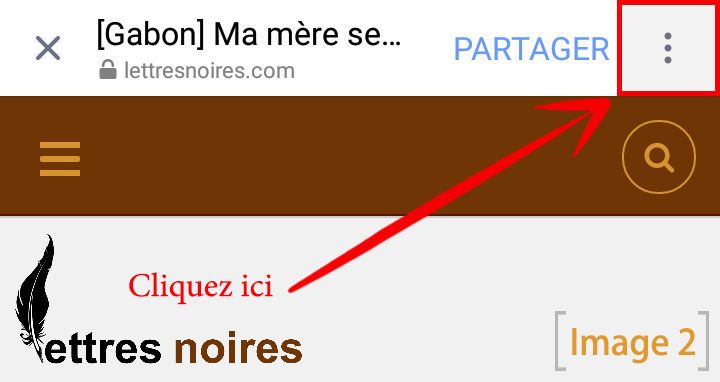

Salut les ami(e)s, Alors il y'a du nouveau sur le blog, Si vous avez Google chrome sur votre mobile Android, vous pourrez accéder à mon blog comme à une application mobile. (voir image 1).

comment le faire? Alors si vous avez ouvert cet article depuis un lien Facebook, regardez (l'image 2).

Ensuite, cliquez sur Ouvrir dans Chrome.(voir image 3)

Une fois sur le site via Chrome, vous verrez apparaître un pop au bas de l'écran. (voir image 4), Validez et c'est fait. Mon icon se trouve maintenant sur votre écran d'accueil.

Si vous êtes déjà sur Chrome mais avez manqué le pop up et que vous ne le voyez plus, ce n'est pas grave.(voir image 5)

Puis
(voir image 6)